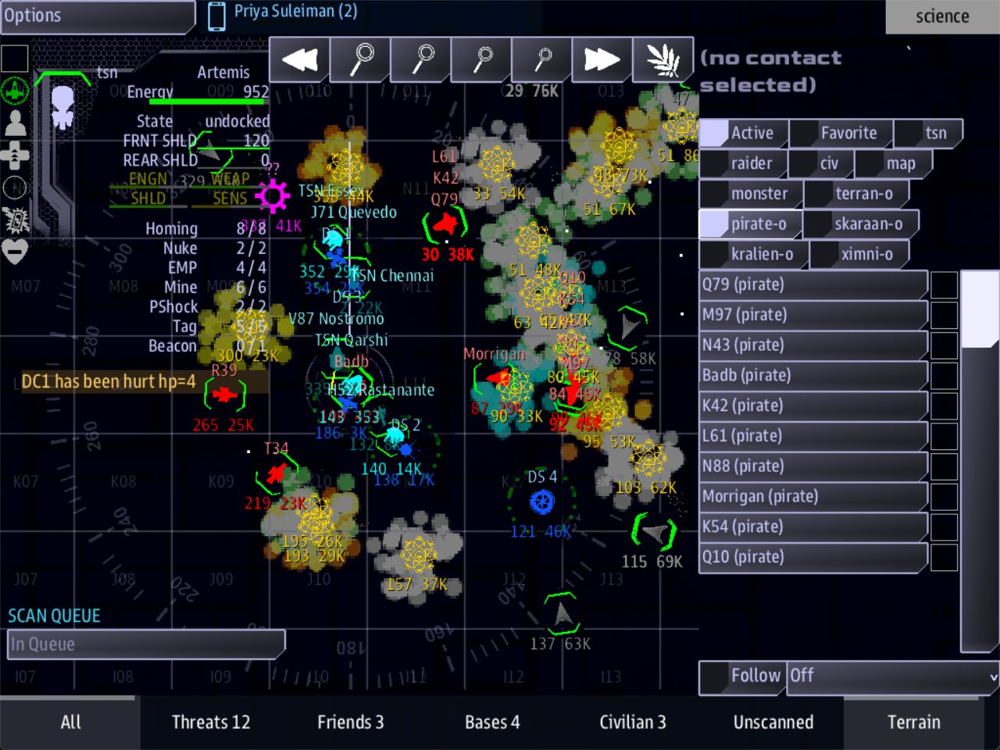

Class 2, Lecture 9 - A Siege boss, part 2¶
What you will have at the end¶
The same boss, now built on purpose. You decide when she arrives, how many fleets come with her, who flies them, how big they are, and which ships carry a name.

Science after she arrives, the list set to scanned pirates: the Morrigan and the Badb among her escorts.In Lecture 8 your Corsair Queen flew a Kralien dreadnought with Kralien escorts, because she was a copy of the Warlord. A corsair should fly pirate ships. Today you fix that, one line at a time.
You will write no code. You change six lines in one file.
The video¶
About 5 minutes. Subtitles are available in the player.
Before you start¶
corsair_queen.amdas Lecture 8 left it, indata\missions\common_data\bosses. A copy is in Lecture 8'sexample\folder.sbs lint common_data\bossessaysclean.Low:is back at25%, the way Lecture 8 left it.
Open the data\missions folder in VS Code, then common_data, bosses,
corsair_queen.amd. Every change today is in the first fence, between Boss and the
closing ---:
Boss
Trigger: enemies_low
Low: 25%
Flies: 50% Kralien, 50% Torgoth
Fleets: 2
Difficulty: +1
Named: Morrigan kralien_dreadnought
The game reads a boss file when the mission starts. After you save a change, start the mission again to see it.
Step 1 - Make her arrive at once¶
You are going to play this boss several times today. Do not fight for ten minutes each time. Change one line:
With Low: 100% she arrives about four seconds after the game starts, before the crew
has destroyed anything. This is your test setting. You put the real number back in
Step 10.
Step 2 - Trigger: - which kind of boss¶
Leave this line as it is. It can say one of two things.
| You write | What the boss is |
|---|---|
Trigger: enemies_low |
One arrival. She comes when the raiders thin out, with her named ships, her fleets and her objective |
Trigger: continuous |
No arrival. A new wave of fleets comes again and again, from the start of the game on |
Your boss is the first kind. So are the Warlord, Ragnarok and the Infestation.
A continuous boss is a different thing, and it reads different lines.
| Line | enemies_low |
continuous |
|---|---|---|
Low: |
When she arrives | Ignored |
Wave: |
Ignored | Seconds between waves. Wave: 40 is a wave every 40 seconds. Leave it out and it is 45 |
Fleets: |
Fleets that arrive with her | Fleets in each wave. Never fewer than one |
Flies: and Difficulty: |
Used | Used |
Named: |
Her named ships | Ignored. No named ship arrives |
| The objective under the boss | Shown when she arrives | Never shown |
The exercise at the end has you build one. For the rest of the lesson, stay with
enemies_low.
Step 3 - Low: - when she arrives¶
Low: is a share of the raiders. The game remembers the largest number of raiders it has
seen. When the number left is that share or less, she arrives.
A Siege at difficulty 5 opens with 15 to 19 raiders. With 16:
| You write | She arrives when this many are left |
|---|---|
Low: 25% |
4 |
Low: 40% |
6 |
Low: 90% |
14 |
Low: 100% |
16. That is all of them, so she arrives at once |
Three things to know.
- Write the percent sign. The game reads
Low: 40as 40% too, but write the sign: every boss file you will read has it. - She comes when raiders are destroyed, not when time passes. If nobody destroys a raider, she never arrives.
- The game looks every four seconds. She arrives up to four seconds after the count is reached, not on the same instant.
- A low number is a long wait. At
Low: 10%the crew must destroy nine raiders in ten before she appears. With sixteen raiders, that is when one is left.
Leave your line at Low: 100% for now.
Step 4 - Fleets: - how many fleets come with her¶
Change the line:
Three escort fleets now arrive with her. Each fleet appears at its own place.
| You write | What arrives |
|---|---|
Fleets: 0, or no Fleets: line |
Her named ships, alone |
Fleets: 1 |
One fleet |
Fleets: 3 |
Three fleets |
Write a whole number, as a digit. How many ships are in one fleet is not on this line. It comes from the next two.
Step 5 - Flies: - who flies the fleets¶
Change the line:
Flies: names a race. The game has six that can fly an escort fleet:
Capital letters do not matter. Spelling does, and so does the plural: it is Pirate, not
Pirates.
You can write the line three ways.
| You write | What happens |
|---|---|
Flies: Pirate |
Every fleet is pirate, every game |
Flies: 75% Pirate, 25% Kralien |
The game rolls once when she arrives. Three games in four, every fleet is pirate. One game in four, every fleet is Kralien |
Flies: Pirate, Kralien |
The same, with even odds |
One roll, not one roll per fleet.
75% Pirate, 25% Kralienwith three fleets does not give you two pirate fleets and a Kralien one. All three are the same race. Write the mix as a story: most nights she brings her own corsairs, and now and then she has hired Kraliens.
The percentages are weights. They do not have to add up to 100. Put a percent sign on every race, and a comma between them.
Step 6 - Difficulty: - how big each fleet is¶
Change the line:
The Siege has a Difficulty setting, from 1 to 11. The crew picks it before the game.
Your Difficulty: line says how hard the boss's fleets are next to that.
| You write | The fleets are built for |
|---|---|
Difficulty: +2 |
Two levels above the game. In a game at 5, level 7 |
Difficulty: -1 |
One level below the game |
Difficulty: 7 |
Level 7, whatever the game is set to |
No Difficulty: line |
The game's own level |
The level cannot go below 1 or above 11. In a game already at 11, +2 is still 11.
The level decides how many ships are in one fleet, and how large they are. A fleet is picked from a short list for its race and level, so two fleets at one level can differ.
| Level | Kralien | Torgoth | Arvonian | Pirate |
|---|---|---|---|---|
| 1 | 1 or 2 ships | 1 | 1 | 1 |
| 3 | 2 or 3 | 1 or 2 | 2 or 3 | 1 or 2 |
| 5 | 3 or 4 | 2 or 3 | 1 to 3 | 1 or 2 |
| 7 | 4 to 6 | 3 | 2 to 4 | 1 to 3 |
| 9 | 5 or 6 | 4 or 5 | 3 to 5 | 3 or 4 |
| 11 | 6 | 6 | 6 | 6 |
A Skaraan fleet is one ship at every level. A Ximni fleet is one ship up to level 9. Their ships get larger as the level rises.
So your boss, in a game at 5, brings three fleets at level 7. On a pirate night that is three fleets of one to three ships. On a Kralien night it is three fleets of four to six. The Kralien night is the harder one.
Difficulty: changes the fleets only. It does not change a named ship.
Step 7 - Named: - her own ships¶
Change the line:
Each named ship is two words: its name, then which ship it is. You met the rule in Lecture 8: the name is one word. Today you change the second word, and you add a second ship after a comma.
The second word is a ship key. These are the raider ships, smallest first:
| Race | Ship keys |
|---|---|
| Kralien | kralien_cruiser, kralien_battleship, kralien_dreadnought |
| Torgoth | torgoth_destroyer, torgoth_goliath, torgoth_leviathan, torgoth_behemoth |
| Arvonian | arvonian_destroyer, arvonian_light_carrier, arvonian_carrier |
| Skaraan | skaraan_defiler, skaraan_enforcer, skaraan_executor |
| Pirate | pirate_longbow, pirate_strongbow, pirate_brigantine |
| Ximni | xim_light_cruiser, xim_battleship, xim_dreadnought |
Type a key exactly as it is here: lowercase, with the underscores. A named ship does not have to match the fleets. A Kralien dreadnought can lead pirate fleets.
| You write | What arrives |
|---|---|
Named: Morrigan pirate_brigantine |
One named ship |
Named: Morrigan pirate_brigantine, Badb pirate_strongbow |
Two named ships |
No Named: line |
Fleets only. The objective still appears |
A named ship is as strong as the ship you chose. It hunts the crew's ships and the starbases.
Your objective is called Sink the Morrigan. With two named ships it still means what it meant in Lecture 8: it is done when every raider is gone, the Badb included. Lecture 10 is about objectives.
Step 8 - Check it¶
Save the file. In a command prompt in data\missions:
You want:
Lint reads the shape of a boss line. It names these mistakes. The word in the last column is at the end of the line lint prints.
| Mistake | What the game would do | Lint says |
|---|---|---|
Fleats: 3 (the label misspelled) |
Bring her named ships with no fleets | unknown-field |
Fleets 3 (no colon) |
The same | An error: it expected Label: value |
Fleets: 3 typed below the closing --- |
The same | field-below-fence |
Fleets: 3 typed in the objective's fence |
The same | unknown-field. It says Fleets is not a quest field |
Named: Morrigan (no ship key) |
Bring the fleets and the objective, and no named ship | hull-name-shape |
Named: Morrigan, pirate_brigantine (a comma between the two words) |
The same | hull-name-shape, twice |
Named: Morrigan pirate_brigantine Badb pirate_strongbow (no comma between the ships) |
Bring the Morrigan and not the Badb | hull-name-shape. The line it suggests is wrong. Add the comma |
Lint also knows the two triggers:
| Mistake | What the game would do | Lint says |
|---|---|---|
Trigger: enemy_low, or enemies low with a space |
Leave your boss out of the Boss list | unknown-enum-value |
Lint does not check the other values. It says clean for every row of this next table.
The game does check most of them: a boss file with a line it cannot read is LEFT OUT of
the Boss list, and mast.runtime.log names the file and the line. So if your boss is not
in the list, open that log.
| You wrote | What happens |
|---|---|
Low: forty percent, or any word |
Your boss is not in the list. The log names the line |
Fleets: three, Fleets: 3 fleets, or Fleets: -1 |
The same |
Wave: fast on a continuous boss |
The same |
Difficulty: hard, +two, 7.5, or 0 |
The same. A level is 1 to 11, or a step such as +2 |
Low: 40 (no percent sign) |
40%, the same as Low: 40% |
Two Low: lines |
The second one is used |
Flies: 75% Pirates, 25% Kraliens (plurals), or any race that is not one of the six |
Her named ships arrive with no fleets. The log says there is no fleet table for that race, and lists the six |
Flies: 75 Pirate, 25 Kralien (no percent signs), or 75% Pirate 25% Kralien (no comma) |
The same |
Flies: 75% Pirate, Kralien (a percent on one race only) |
Every fleet is pirate, every game. Kralien is dropped, and nothing says so |
Named: pirate_brigantine Morrigan (the ship key first) |
A ship named pirate_brigantine arrives, on a ship key the game does not have. Do not share a boss like this |
Named: Morrigan pirate_brigantin (a key misspelled), or Pirate_Brigantine (capitals) |
A ship named Morrigan arrives, on a ship key the game does not have. The game does not stop. Do not share a boss like this |
mast.runtime.log is in the LegendaryMissions folder. It is empty after a clean game.
Step 9 - Play it¶
- Start the game with
sbs run server,helm,science -m LegendaryMissions: as in Lecture 8, but with Science, where you count. Stay on Siege. - In the Options panel, set Difficulty to 5 and choose Corsair Queen on the Boss line.
- Press Start Mission.
With Low: 100% she arrives about four seconds in. On Science, count what came. The
contact list names a ship only once it is scanned; until then it reads unknown. So press
the raider chip, pick each row in turn and press Queue Scan. Then turn raider off
and press the chip for her fleets' race, pirate-o or kralien-o: it lists the scanned
ships of that race. You should count:
- two named ships, Morrigan and Badb,
- three new fleets, all of one race,
- pirate fleets of one to three ships each, or Kralien fleets of four to six,
- the objective Sink the Morrigan in the Quest Log.
Start the mission again and look a second time. Over many games, about three arrivals in four are pirate.
Then change one number and play again. Try Fleets: 1. Try Difficulty: 11: every fleet
is six ships. Put your own numbers back when you have seen it.
Step 10 - Set her real arrival¶
Testing is over. Change Low: to the number you want the crew to play:
Four raiders in ten are still flying when she comes. The crew is winning, but the siege is not yet over.
Then bring the note at the top of the file up to date. It is for you, a year from now:
// The Corsair Queen - my Siege boss.
// She arrives when 4 raiders in 10 are left: two named ships and three escort fleets,
// two levels above the game's difficulty. Three games in four the fleets are her own
// pirates. One game in four she has hired Kraliens.
Save, and run sbs lint common_data\bosses once more.
The finished file¶
// The Corsair Queen - my Siege boss.
// She arrives when 4 raiders in 10 are left: two named ships and three escort fleets,
// two levels above the game's difficulty. Three games in four the fleets are her own
// pirates. One game in four she has hired Kraliens.
# [Corsair Queen](corsair_queen)
---
Boss
Trigger: enemies_low
Low: 40%
Flies: 75% Pirate, 25% Kralien
Fleets: 3
Difficulty: +2
Named: Morrigan pirate_brigantine, Badb pirate_strongbow
---
The Corsair Queen watched the siege falter from the dark. Now she brings her own ships to finish it.
## [Sink the Morrigan](sink_morrigan)
---
Quest
Scope: shared
State: active
Parent: siege_mission
Required: true
Done when: signal siege_won
Reward: 600 credits
---
The Queen's flagship Morrigan leads the last assault. Destroy her and every raider with her.
A line you leave out has a meaning too:
| Line left out | The game uses |
|---|---|
Trigger: |
enemies_low |
Low: |
25% |
Flies: |
Kralien |
Fleets: |
No fleets |
Difficulty: |
The game's own level |
Named: |
No named ship |
Wave: |
45 seconds |
If something goes wrong¶
| What you see | Likely cause |
|---|---|
| She arrives the moment the game starts | Low: is still 100% from testing |
| She never arrives | She is not chosen in the Boss list, or Low: is small and the crew has not destroyed enough raiders |
| The named ships arrive with no fleets | The race on Flies: is misspelled, plural, or missing its percent sign or comma. Or Fleets: is misspelled, missing, or outside the fence |
| The fleets arrive with no named ship | Named: has one word, or a comma between the name and the ship key |
| One named ship arrives and the second does not | The comma between the two ships is missing |
| Your boss is not in the Boss list | One of her lines cannot be read: Trigger:, Low:, Fleets:, Wave: or Difficulty:. mast.runtime.log names the file and the line |
| Every arrival is the same race | That is the rule: one roll for all the fleets. If it is the same race every game, one race on Flies: has no percent sign |
| A change you saved did nothing | The mission was already running. Boss files are read when the mission starts |
| Lint warns about every line of the first fence | Your copy of the game or of sbs is older than this course. Let the store update the game to 1.4.0, and type sbs update |
Exercise¶
On your own boss. In Lecture 8 you made a second boss from your own setting.
- Give it a
Flies:line that fits its story: one race, or a mix written as odds. - Choose its named ship from the table in Step 7. Add a second named ship.
- Decide when it arrives. A boss at
Low: 60%interrupts a fight. A boss atLow: 15%is a last stand. - Set
Fleets:andDifficulty:. Use the table in Step 6 to work out how many ships that is at game difficulty 5. Write the number down, then play and count. - Break it on purpose: make the race plural. Run lint: it says
clean. Play: the named ships arrive alone. Fix it.
A wave boss. Copy corsair_queen.amd to a new file in the same folder, such as
corsair_tide.amd. Give it a new name and key in the first heading. Then:
Delete its Low: and Named: lines, and its objective. A continuous boss uses none
of them. Before you start the mission, type 1 on the Time Limit line of the
Options panel.
Then play it: one Skaraan ship arrives every 20 seconds. When the minute runs out the
waves stop and the crew wins.
Checkpoint¶
You are done when all five are true:
sbs lint common_data\bossesshows your file asclean.- You can say what each of the six lines does without looking it up.
- With
Low: 100%, your boss arrives a few seconds into the game. - She brings the number of fleets on your
Fleets:line, all of one race from yourFlies:line. - Every ship on your
Named:line arrives under its name.
Next¶
Lecture 10 gives the boss more than "destroy everything": objectives of its own, and one card of MAST for a boss that does something no line can say.
Further reading¶
- "Writing a Siege boss" in the LegendaryMissions documentation: the reference table for
the boss fields. It does not yet say three things this page does: the mix on
Flies:is rolled once for all the fleets, acontinuousboss ignoresLow:,Named:and its objectives, and a value the game cannot read leaves the boss out of the Boss list. - The four shipped bosses in
LegendaryMissions\maps\bosses. Readragnarok.amdfor two named ships andcontinuous.amdfor a wave boss. data\shipData.yaml: every ship in the game. Search it for"key":to find more ship keys. Do not edit it.
Download this lecture's finished files (a zip of its example folder).